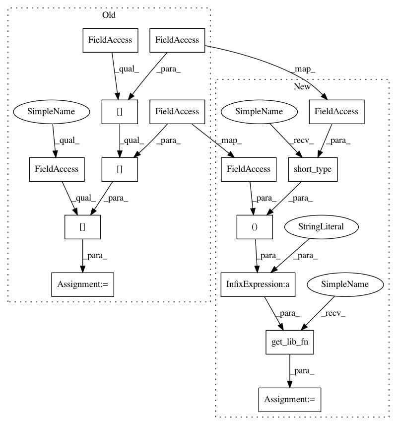

7927c56133dbf7ed60e951a51490a6d17d50f44c,ants/registration/reorient_image.py,,get_center_of_mass,#Any#,118
Before Change
if img.pixeltype != "float":
img = img.clone("float")
center_of_mass_fn = lib.__dict__[_center_of_mass_dict[img.pixeltype][img.dimension]]
com = center_of_mass_fn(img.pointer)
return tuple(com)
After Change
if img.pixeltype != "float":
img = img.clone("float")
libfn = utils.get_lib_fn("centerOfMass%s%i" % (utils.short_type(img.pixeltype), img.dimension))
com = libfn(img.pointer)
return tuple(com)
In pattern: SUPERPATTERN
Frequency: 3
Non-data size: 15
Instances
Project Name: ANTsX/ANTsPy
Commit Name: 7927c56133dbf7ed60e951a51490a6d17d50f44c
Time: 2017-09-24
Author: ncullen.th@dartmouth.edu
File Name: ants/registration/reorient_image.py
Class Name:
Method Name: get_center_of_mass
Project Name: ANTsX/ANTsPy
Commit Name: 7927c56133dbf7ed60e951a51490a6d17d50f44c
Time: 2017-09-24
Author: ncullen.th@dartmouth.edu
File Name: ants/registration/reflect_image.py
Class Name:
Method Name: reflect_image
Project Name: ANTsX/ANTsPy
Commit Name: 7927c56133dbf7ed60e951a51490a6d17d50f44c
Time: 2017-09-24
Author: ncullen.th@dartmouth.edu
File Name: ants/utils/channels.py
Class Name:
Method Name: split_channels